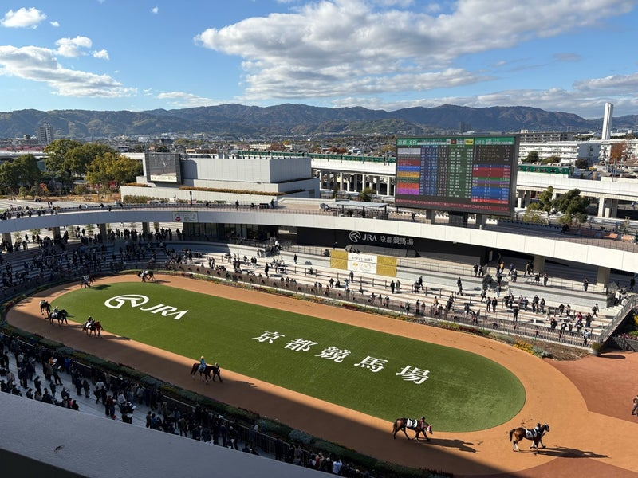
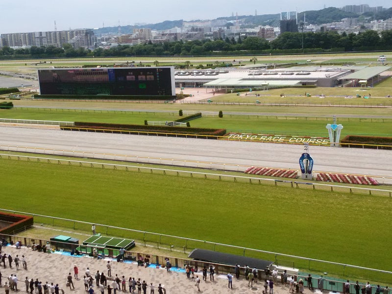

【京都2歳S】ノヴァヴェローチェ 追うごとに上昇 上村師「広いコースに替わるのもいい」
2026年11月25日 ・ netkeiba
火曜朝はCWコースから坂路で調整。上村洋行調教師「追うごとに動きが良くなって、いい状態に仕上がっている」。
出典：netkeiba（2026-11-25）
最終更新：2026年11月28日 12:01
この画面は、レース予想や購入推奨をするものではなく、回顧データから今回の購入候補を整理するためのものです。表示は次の3つに分けています。
回顧が不足している場合や、条件の判定材料がない場合は、その不足を明示し、推測で埋めません。買い目・金額・最終的な購入判断は表示しません。購入するかどうかは、根拠を見て利用者が判断してください。
週末（11月28日・29日）の重賞3鞍について、見出しと出典リンクを掲載しています。
掲載しているのは、出典記事の見出し・出典リンクだけです。11月26日に追加した最終追い切り・厩舎コメント・枠順確定の記事は見出し＋出典リンクのみで、抜粋はありません。既存の記事には短い抜粋（1〜2行）が付いています。本文は各記事へのリンクから確認してください。このページは自動更新されません。最終追い切り・厩舎コメントは11月26日に追記済みです。各カードは見出しだけの表示で、タップすると抜粋（ある場合）と出典が開きます。カード右下の日付は記事の日付です。
読み方：ニュースは「今回の状態・動向」を知る材料、回顧マスターの照合は「過去の回顧から見た条件の合致」を知る材料です。陣営コメントはレース前の談話であり、結果を保証するものではありません。

火曜朝はCWコースから坂路で調整。上村洋行調教師「追うごとに動きが良くなって、いい状態に仕上がっている」。
1週前追い切りはWコースで馬なり、5F69.9-1F11.6。杉原誠人騎手「体力が凄くある」「気がいいし、感触は凄く良かった」。
1週前追い切りはCWコースで6F83.6-1F11.4で併入。斉藤崇調教師「いい意味で行きっぷりが出てきました。まずはゲート」。
最終追い切り・厩舎コメントを追加済み（11月26日）。

2026年 第5回東京競馬 第8日 第12競走 第46回 ジャパンカップ（GⅠ）2,400メートル（芝・左）。（出走可能頭数 18頭／第1回特別登録頭数 12頭および外国馬 6頭）11月29日（日曜）実施
11月25日、栗東・CWコースで単走、6F81.6-11.7。安田翔伍調教師「気分良く走らせようと思っての追い切り」。
最終追い切り・厩舎コメントを追加済み（11月26日）。
火曜朝は角馬場で体をほぐした後、CWコースを流した。石橋守調教師「元々、稽古は動くタイプで(中間の)動きはいい。いい状態に仕上がっている」。
月曜にCWコースで6F86.7-1F11.9。斉藤崇調教師「だいぶ力を付けていますね。強いメンバーと初めて対戦しますが、挑戦できるところまで成長してくれた」。
最終追い切り・厩舎コメントを追加済み（11月26日）。
この画面の位置づけ：この画面は、レース予想や購入推奨をするものではなく、回顧データから今回の購入候補を整理するものです。回顧メモの「狙い・保留・危険」、直近3走の内容、今回条件との照合結果は、それぞれ別のものとして分けて表示しています。回顧が不足している場合や条件の判定材料がない場合は、その不足を明示します。購入するかどうかは利用者が判断するため、買い目・金額・最終的な購入判断は表示しません。
照合の出典：出馬表は2026年11月27日に取得した今週末分（60レース・844頭）です。判定は、各馬の直近最大3走の回顧を使う照合エンジン（2026年11月27日に2026-11-27統合版マスター＝3,875行・283レースで再照合）の結果で、回顧済み264頭の内訳は◎59・○66・△138・？1です。ジャパンカップ（11/29東京12R）は18頭中12頭が回顧済み、京都2歳S（11/28京都11R）は11頭中11頭が回顧済み、京阪杯（11/29京都12R）は18頭中10頭が回顧済みです。出走取消・除外については、11月27日夕方時点で確定出馬表に取消の表示はありませんでした。馬番は全頭確定済みです。評価表の総合評価・実績指数・内容補正後能力評価は、詳細マスター（MUSE_v2_master_review_updated.csv）の回顧記録を、レースIDと馬名で照合して転記したものです（回顧済み264頭全頭分を確認済み）。
結果との照合：2026年11月28日・29日のレースはまだ行われていないため、結果照合は未実施です。土曜13時・17時、日曜12時・17時に結果照合を行い、発走前の表示（回顧メモ区分・条件照合・該当条件・根拠）を凍結したまま、確定着順・着差と並べて表示します（結果は「結果の内訳」として示し、予想的中率・購入推奨・収支としては扱いません。買い目・購入金額・購入有無は入力も表示もしません）。結果照合後に新しい回顧ができても、発走前の表示・確定結果・新しい回顧は別の記録として保持し、発走前の状態は書き換えません。今回のレース自体の回顧はまだないため、「今回の回顧」は全頭「未回顧」と表示します。